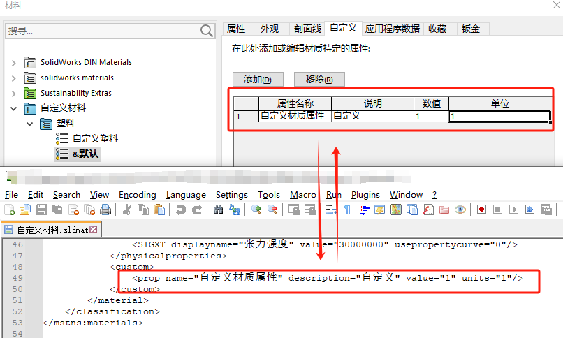

Sw_材料自定义属性使用
使用自定义选项卡将非标准属性添加到材料中。 可使用 API 调用来检索属性。 当所选的材料位于自定义库中时，此标签可进行编辑。
材料对话框 - 自定义标签

代码
通过MaterialIdName获得材料库和材料名，因为获得的结果是“材料库|材料名”。所以可以考虑用string.Split()方法分开。
1
2
3
4
5
6
7
|
ModelDoc2 swDoc = swApp.ActiveDoc;
string material_db = swDoc.MaterialIdName.Split('|')[0];
string material_name = swDoc.MaterialIdName.Split('|')[1];
string material_xmlpath = "";
|
Sldwork.GetMaterialDatabases()方法可以获得材料库文件路径集合。
1
2
3
4
5
6
7
8
9
10
|
object[] vMatDBarr = (object[])swApp.GetMaterialDatabases();
foreach (object item in vMatDBarr)
{
if (item.ToString().IndexOf(material_db, StringComparison.OrdinalIgnoreCase) >= 0)
{
material_xmlpath = item.ToString();
}
}
|
通过获得的材料库XML文件进行读取材料自定义属性，

1
2
3
4
5
6
7
8
9
10
11
12
13
14
15
16
17
18
19
20
21
22
23
24
25
26
27
28
29
30
31
32
33
34
35
|
XmlDocument doc = new XmlDocument(); doc.Load(material_xmlpath);
XmlElement element_root = doc.DocumentElement;
XmlNodeList node_lists = element_root.GetElementsByTagName("material");
foreach (XmlElement element in node_lists)
{
if (material_name == element.GetAttribute("name"))
{
XmlNodeList element_allprop = element.SelectNodes("custom/prop");
if (element_allprop != null)
{
foreach (XmlNode item in element_allprop)
{
XmlAttributeCollection prop_attribute = item.Attributes;
if (prop_attribute[0].Value==propname)
{
string s0 = prop_attribute[0].Value;
string s1 = prop_attribute[1].Value;
string s2 = prop_attribute[2].Value;
string s3 = prop_attribute[3].Value;
return s2;
}
}
}
else { Console.WriteLine(material_name + "没属性"); }
}
}
|
编辑材质事件
我想法是：
1、默认模板的我预先定义好材质的自定义属性到文件属性里；
2、编辑材料（修改的部分）时，能否有个什么事件可以触发材料自定义属性赋值的函数。